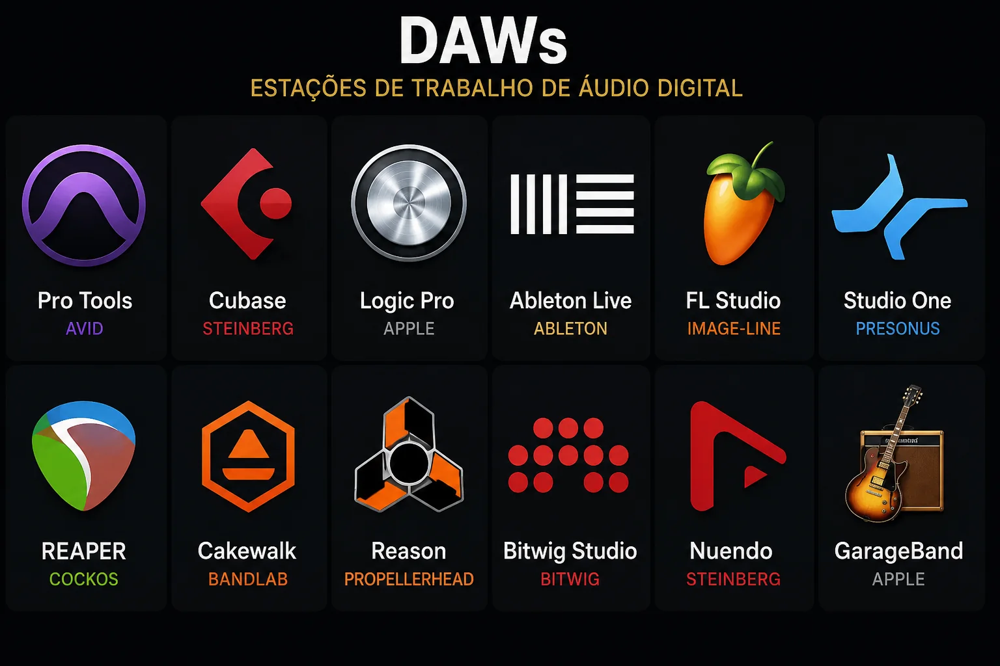
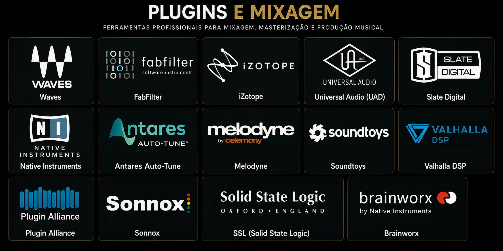
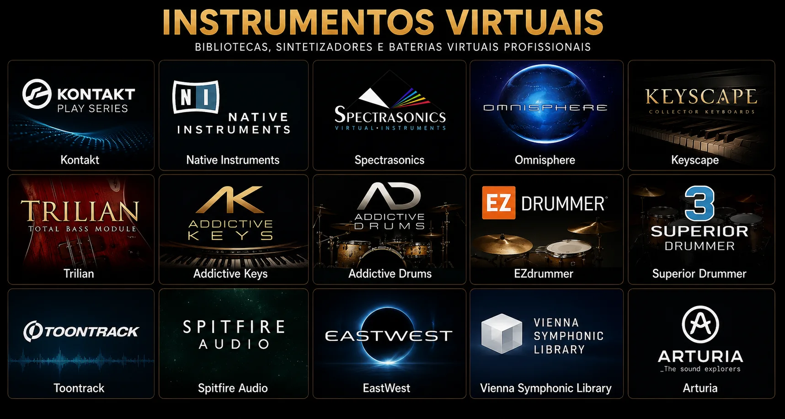
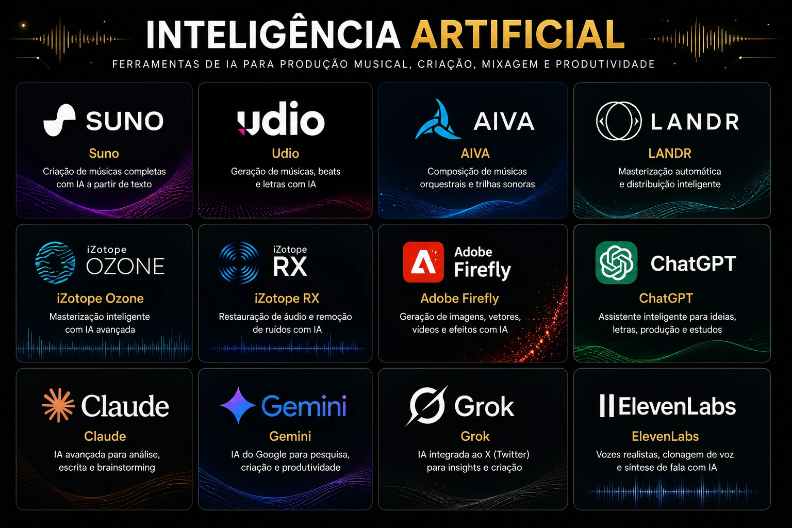
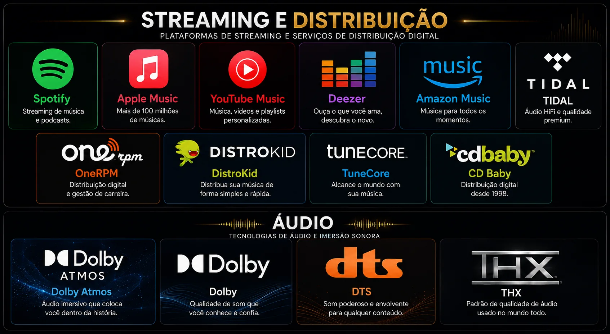
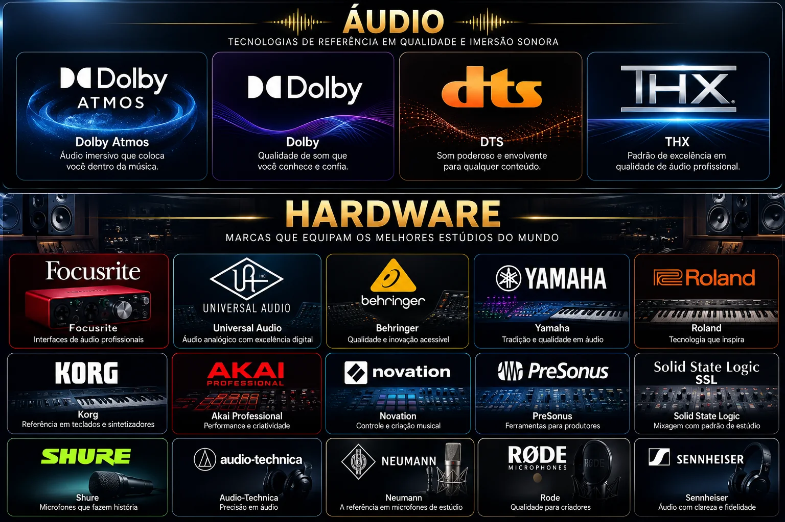
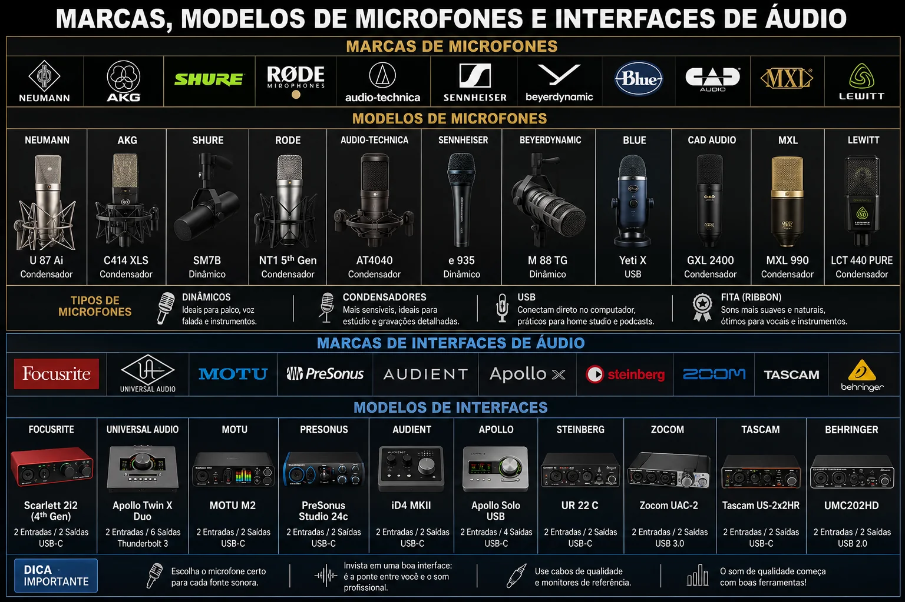
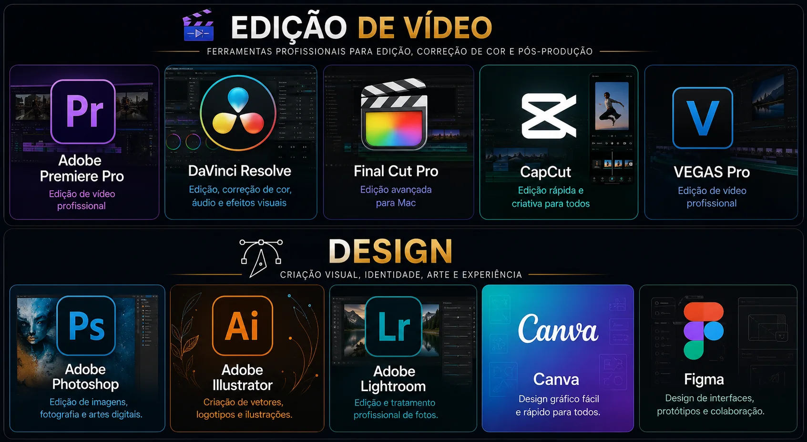

Fundamentos da produção
Escuta, áudio digital, fluxo de trabalho, organização de sessão e os pilares de uma produção consistente.
Grade curricular · ecossistema EMP™
Uma formação que conecta técnica, linguagem musical, ferramentas atuais e visão de mercado — sem depender de uma única marca ou software.
Mapa completo
Da orientação inicial ao projeto final, cada etapa produz uma competência e prepara a próxima.
Orientação, som, fundamentos musicais, estúdio, microfones e acústica.
M01–M06Pro Tools, Reaper, visão multi-DAW, MIDI, plugins e instrumentos virtuais.
M07–M09Pré-produção, arranjo, direção artística e gravação em estúdio.
M10–M11Edição de áudio, mixagem, masterização e produção vocal.
M12–M15IA responsável, direitos, distribuição, carreira, vídeo e identidade.
M16–M18Projeto aplicado, apresentação técnica, avaliação final e próximos passos.
M19–M20Aprender fazendo
Você aprende a escolher recursos de acordo com o objetivo artístico e técnico de cada projeto. As ferramentas apresentadas são referências de estudo; o foco é desenvolver escuta, repertório e capacidade de decisão.
Escuta, áudio digital, fluxo de trabalho, organização de sessão e os pilares de uma produção consistente.
Harmonia, ritmo, melodia, estrutura musical e decisões que sustentam uma canção.
MIDI, gravação, edição, bibliotecas e recursos para construir sua paleta sonora.
Equalização, compressão, ambiência, automação, loudness e entrega consciente para streaming.
IA como ferramenta responsável de pesquisa, criação, referência, organização e produtividade.
Distribuição digital, direitos autorais, marketing musical, plataformas e empreendedorismo.
Ferramentas, tecnologias e referências
As aulas apresentam fluxos de trabalho que podem ser adaptados ao seu setup. Conheça DAWs, plugins, instrumentos virtuais, recursos de áudio, IA, distribuição e ferramentas criativas presentes na rotina de produtores.








As marcas e os produtos exibidos pertencem aos seus respectivos titulares e são apresentados apenas como referências educacionais. A Engenharia da Produção Musical™ não é afiliada nem patrocinada por essas empresas.
Ferramentas mudam. Fundamentos permanecem.
Você não precisa possuir todos os recursos para começar. A formação mostra como construir um processo consistente, escolher prioridades e evoluir seu projeto com o que está ao seu alcance.